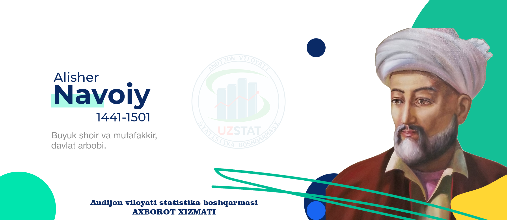
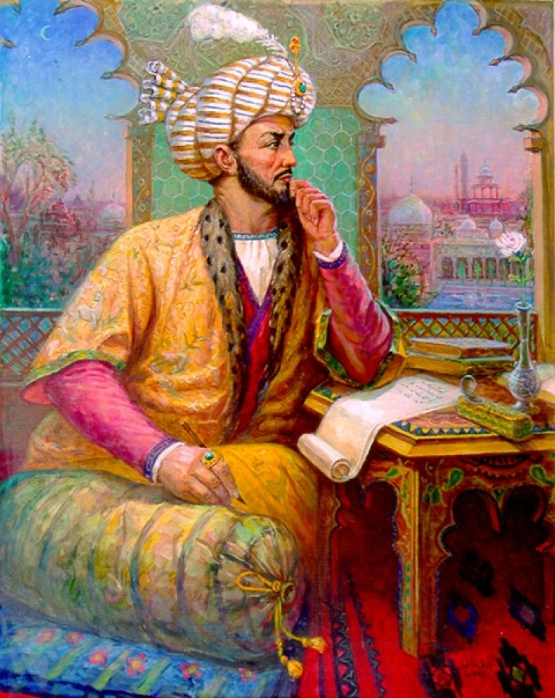

RASIMLARDAN BIRIN USMIGA BOSING



O‘tmishdan ma'lumki, bizning yurtimizdan Abu Nasr Farobiy, Abu Rayhon Beruniy, Amir Temur
, Abdurahmon Jomiy, Alisher Navoiy, Bobir Mirzo
, Mirzo Ulug‘bek
, Burhoniddin Marg‘oniniy, Bahouddin Naqshband, Imom Buxoriyu necha necha Xorazmiyu, Termiziyu va Samarqandiylardek –muhaddislar, mufassirlar, faqihlar, mutasavviflar o‘tishgan. Matematika, astranomiya, fizika kabi aniq fanlar, tarix, adabiyot va boshqa ijtimoyi fanlarga doir katta katta bir necha jildan iborat ilmiy asarlar yozib, dunyo ilmu ma'rifati rivojiga ulkan hissa qo‘shgan ko‘plab buyuk bobolarimiz yetishib chiqqan.
Bulardan qolgan ilmiy meroslarda Vatanga muhabbat, diniy bag‘rikenglik, odob axloq, umuinsoniy qadriyatlar, ilmga olishlikka da'vat etuvchi kabi milliy va ma'naviy ezgu g‘oyalar va bebaho bilimlar mavjud. Bizning buyuk bobolarimizdan olinadigan ibratli jihatlaridan biri bu ularning ilm ma'rifat olishga bo‘lgan harakatlari, muhabbatlari va aynan shu egallagan bilimlari bilan butun dunyoning barcha sohasi ravnaqiga o‘z hissalarini qo‘shganlaridir. Bulardan qolgan ilmiy meroslar hozirda jahonning ko‘plab oliygohlarida tadqiq qilinadi va o‘qitilib foydalanib kelinmoqda. Ularning asarlari dunyoning turli tillariga tarjima qilinmoqda.
Ilm olishlik to‘g‘risida Islom dini manbalarida juda ko‘p targ‘ib qilingan. Ilm olishlik, kitob o‘qishlik bilim ma'rifat sohibi bo‘lishimiz borasida allomalarimiz, olimlarimiz biz avlodlariga ko‘pdan ko‘p pandu nasihatlarini aytib ketganlar. Bu biz avlodlar uchun ulardan oladigan ibrat, ularga mos va munosib bo‘lishligimiz uchun, bizni ilm sari harakat qilishimizga undaydi.